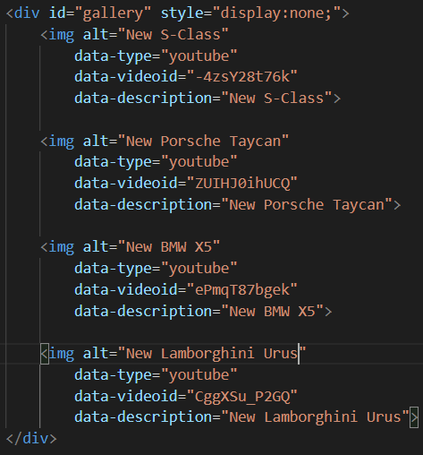

Під'єднуємо всі загальні файли плагіну:
Скрипт для виклику плагіну:
1.Код реалізації фотогалереї з можливість перегляду збільшених зображень:
Зовнішній вигляд фотогалереї:
Зовнішній вигляд зображення при збільшенні:
2.Код реалізації слайдера фотографій:
Зовнішній вигляд слайдера фотографій:
3.Код реалізації слайдера відео:

Зовнішній вигляд відео слайдера з вимкненим відео:
Зовнішній вигляд відео слайдера з ввімкненим відео: